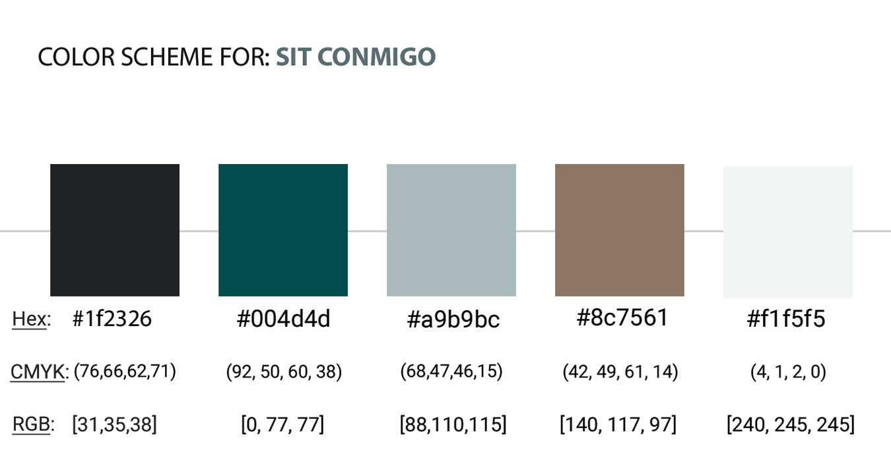

Sit Conmigo | UI & Responsive Design

Overview
Creation of a design comp for Sit Conmigo, a sustainable furniture company, using visual communication of business mission and brand personality. Using the Mobile First responsive design approach and incorporating research, user interface and visual design skills, the design aims to showcase the client’s chair designs and encourage customers to pre-order them, while being mobile-ready for smartphone shoppers.
My Role
- Utilize the Mobile First responsive design approach for websites.
- Identify and prioritize site content, structure, navigation, & layout.
- UI design for a single-page website to showcase client’s products.
- Use cohesive color & type styles inspired by the brand’s mission.
- Highlight mission and visually communicate brand personality.
- Complete design comps for mobile, tablet, & desktop versions.
The Customer
Yolanda Lopez is the CEO and founder of Sit Conmigo company. Sit Conmigo specializes in chairs that are produced sustainably and ethically. Yolanda has designed four chairs so far, and feels it’s the right time to launch her website. She needs someone to design a website to showcase her new chair designs and allow customers to start pre-ordering them.
The Mission
Sit Conmigo’s mission is to create chairs that are trendy, stylish, and best of all, comfy! Every Sit Conmigo chair is made with only sustainable, fair-trade materials. We’re also committed to promoting fair labor practices that ensure our employees have safe working conditions and are paid fairly for their skills. The result is a chair that you’ll not only love in your home or office but a chair that was lovingly made by the person building it.

Sit Conmigo's Slogan
“More than a conversation piece, it’s a humanitarian piece.”
Founder's Statement:
"Be kind to humanity and the environment, one seat at a time."
Project Goals & Deliverables
The main goals of Yolanda’s site:
- Showcase her chairs and entice customers to pre-order them.
- Highlight her mission as a fair trade and fair labor designer.
- Visually communicate the personality and mission of her business.
Deliverables include:
- Mobile, tablet, and desktop design comps.
- Color & type styles inspired by the Sit Conmigo logo & mission.
- Exported assets that will be used by Yolanda’s web developer.
Assets provided: logo, client headshot, chair product images, mission.
Digital wireframe and design comp sizes:
- Mobile - 375px x 812px
- Tablet - 768px x 1024px
- Desktop - 1366px x 768px
Research & Client Intake
The target audience for the chairs strongly value sustainability as well as eco- and ethically-produced goods. The client wants to ensure that her stylish chair designs entice orders, but it's also important that the mission to support fair trade and fair labor resonates with potential customers.
Many of the competitors are big-box retailers (like IKEA) who often focus on either sustainably sourced materials or fair labor. Sit Conmigo is unique in the furniture marketplace because they focus on BOTH the source of materials and ethically building their chairs with fair labor.
Additional Client Requests
- A large header (CTA) with images and text encouraging customers to pre-order.
- A Pre-order section that includes chair photos, product names, and links to pre-order the new chairs.
- An About section with information about the company and its mission. The section should also include a photo.
- A Contact section in the footer with links to social media, an email address, and phone number.
- Navigation with links to the Pre-order, About, and Contact sections.
Inspirational Mood Board
Responsive Web Design
Mobile First Approach
Designing an online experience for mobile screens first, before designing it for larger screen sizes, includes two steps: prioritizing the absolute must-have information and maximizing the space on the mobile screen. This user friendly approach gives users the most important information they’re looking for right away, without having to search for it. Progressive enhancement meant building the smaller, mobile version first including essential features and functions, then later expanding the design to larger and more advanced tablet and desktop versions for optimal user experience.
The Challenge
The main challenge was in fitting all the content, information and design ideas into a small space. Considering the main goals from the project brief, as well as additional client requests, I was able to prioritize the most important content and position design requirements into the layout accordingly.
Using condensed content and visual hierarchy, the mobile design uses a collapsed menu in the corner, which upon clicking reveals a dropdown of the full navigation menu. That way, the navigation keeps its importance, takes up less space, and makes room for other high-priority content.
Mobile Wireframe
Wireframe for iPhone X/XS/11 (375 x 812)
Tablet Wireframe
Wireframe for iPad/Nexus (768 x 1024)
Rapid Prototyping
Using the web design workflow, I reviewed the project brief and client information, goals and requirements, visited websites that Yolanda shared for inspiration, created my mood board, began sketches and layout of the mobile site structure, and compiled my style tile with colors and typescale. After I made a brief sketch for the first mobile and tablet version of the site, I then built an early wireframe version for each. With the top priority being pre-orders, I wanted to make sure that call to action was evident and easily accessible throughout the design. Rather than continuing sketching of each page layout and progressive wireframes in low fidelity, as I’ve done with past designs, this time I began rapid prototyping toward high fidelity through digital design and transferred the styles to subsequent device versions.
Details and Design
Color Scheme
I selected a color scheme with soothing colors representing trust, the earth element, eco-green vision and echoing the Sit Conmigo philosophy. The deep blue-green teal as a primary color for headings added a splash of exciting color, yet I kept plenty of whitespace so as not to detract from the actual products. The neutral bamboo beige hue was integrated as a contrasting tone, yet still complementing the primary color. A light blue monochrome hue was selected as an accent, as well as almost black and almost white to be used for text and with backgrounds, when applicable.

Typography
Negative space was also considered when exploring typeface and fonts. It’s important that empty space exists in-between elements, including text and images, in order to create a clean and harmonious design that avoids cluttering elements together. The selected typeface and font family traits represent the brand needs to match the traits of the brand personality and support its message. The types chosen were modern, refined sans-serif with clean edges and stability, as well as an interesting display font with a hint of excitement and uniqueness.
Exploration & Style Tile
Final Versions
Styled Comps
Rapid prototyping towards high fidelity mockups I began applying the colors, typefaces, and visual elements, including logo, icons and photos, to the mobile design comp. To create a cohesive, unified design, the same visual elements were then applied to the tablet and desktop comps. The main difference between the mobile, tablet, and desktop comps will be the size and placement of the copy and visual elements. Maintaining a consistent look and feel, the arrangement of elements between each comp would vary subtly.
With the desktop version I was able to add a couple extra elements I had been inspired to, including an expanded collage with some images I selected for my mood board as a reflection of the process and to highlight that aspect of Sit Conmigo’s mission and commitment to fair trade. Understanding the customer and the company’s goals and mission, I was able to incorporate brand psychology to establish an overall personality with strategic use of color, typography, imagery, and iconography.
Responsive Web Pages
Mobile Page
Tablet page
Desktop Homepage